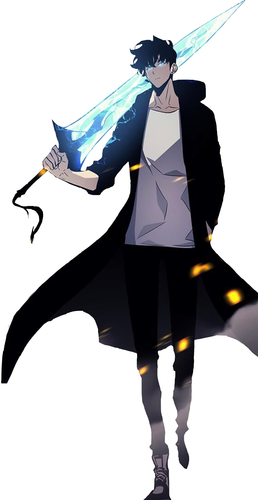
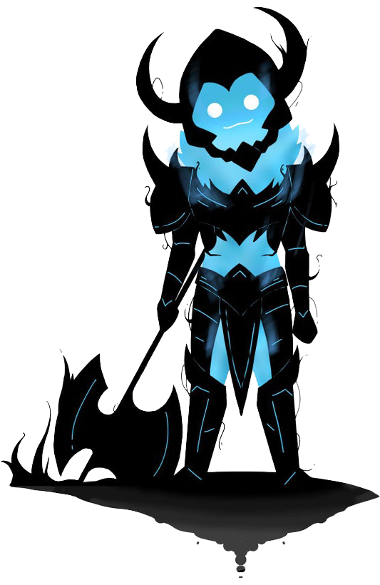

Sobre a Barbearia AhJin
Localizada no coração da cidade a Barbearia AhJin traz para o mercado o que há de melhor para o seu cabelo e barba. Fundada em 2019, a Barbearia AhJin já é destaque e conquista novos clientes de todo o mundo a cada dia.
Nossa missão é: "Proporcionar auto-estima e qualidade de vida aos clientes, sejam despertados ou não!".
Oferecemos profissionais experientes e principalmente: fortes. Para lhe defender de qualquer monstro que não goste do seu corte de cabelo. O atendimento possui padrão de excelência e agilidade, garantindo qualidade e satisfação dos nossos clientes.
Garantido pelo dono e tambem maior caçador do mundo Sung Jin-Woo.
Agendamento de horario para corte com o dono devem ser feito com, pelo menos seis meses de antecedencia.
Não nos responsabilizamos pelos ocasionais status de confiança, sorte, charme ou qualquer outro em clientes despertados, tendo em vista a baixa probabilidade de acontecer.
Beneficios
-

- Atendimento aos clientes feitos por sombras do caçador Sung Jin-Woo
- Corte diferenciado com uso adagas, machados e espadas
- Segurança garantida pelo maior caçador do mundo
- Profissionais sombrios bem recomendados
- Baixa taxa de acidente com formigas